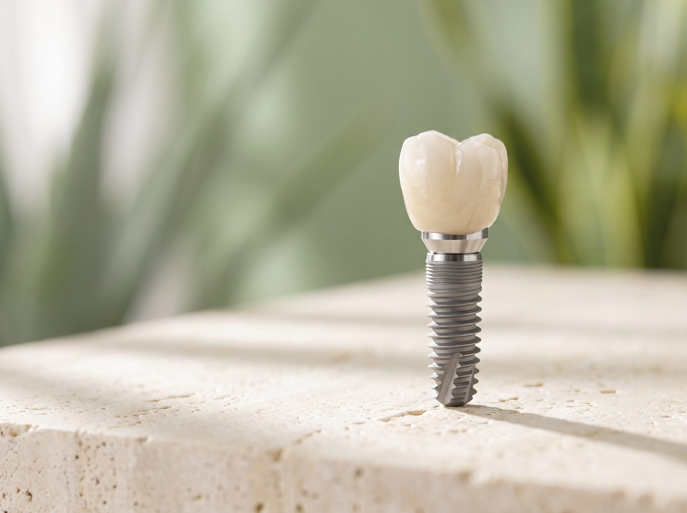
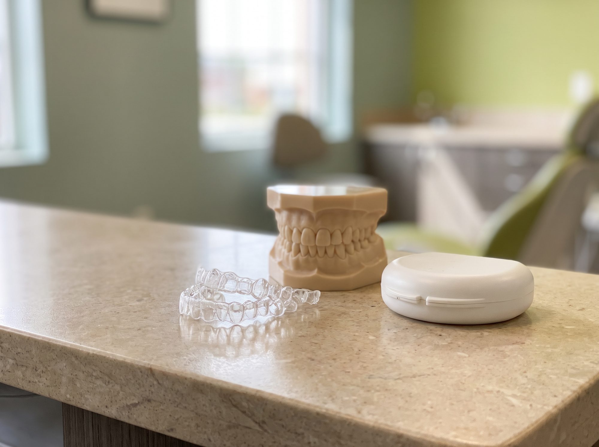
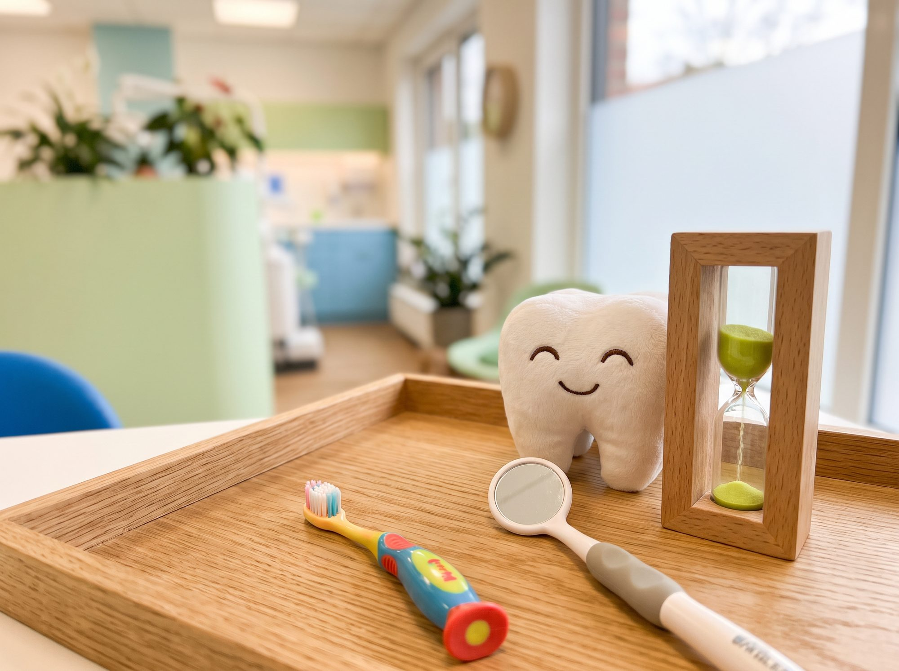
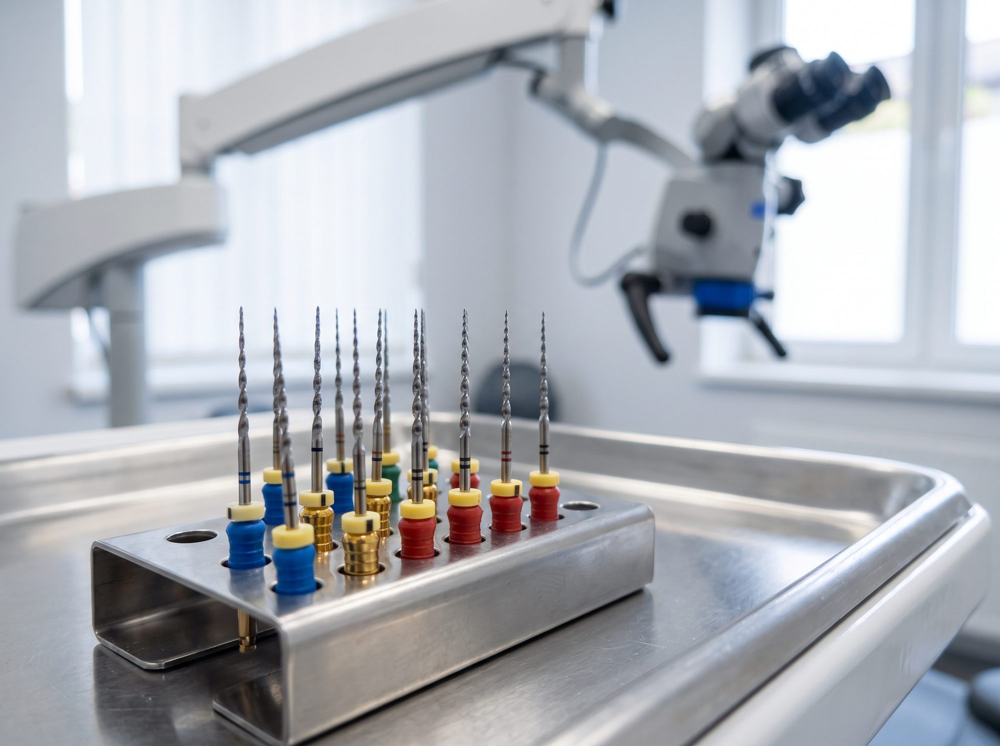
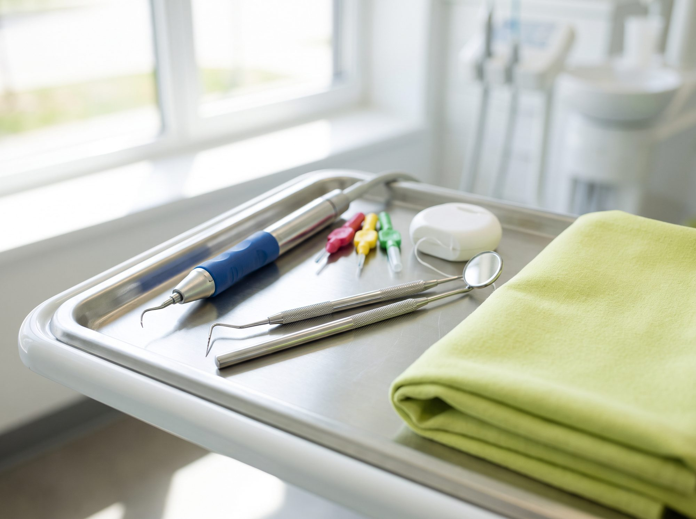

Retrato · Dra. Mª José de Tomás
Calle Doña Antonia Donderis, 9 · 46380 Cheste, Valencia
Clínica dental en Cheste · Desde 1997
Tu sonrisa, en manos de quien te conoce.
Implantes, ortodoncia, estética y odontología para toda la familia. Un equipo con experiencia y un trato cercano, en el centro de Cheste.
1997Abiertos desde
4Gabinetes equipados
1 díaDientes fijos con carga inmediata
Foto principal · 4:5
Paciente sonriendo en el gabinete
o las doctoras con un paciente
Paciente sonriendo en el gabinete
o las doctoras con un paciente
Dientes fijos en un díaImplantología con carga inmediata
Tratamientos
Todo lo que tu boca necesita, en un mismo lugar
Estudiamos cada caso antes de proponer nada. Te explicamos las opciones con claridad y elegimos contigo.

Implantología dental
Recupera dientes perdidos sin tocar los vecinos. Con el equipo especializado de Vericat (IVAII).
Dientes en un díaPostextracciónCigomáticos
Ver tratamiento →

Estética dental
Dientes más blancos y armónicos, respetando siempre el diente natural.
BlanqueamientoCarillas de compositeCarillas cerámicas
Ver tratamiento →

Ortodoncia
Dientes alineados por estética y por función. Para niños, adolescentes y adultos.
InterceptivaCorrectivaAdultos
Ver tratamiento →

Odontopediatría
Revisiones tranquilas para los más pequeños. Detectamos a tiempo y corregimos malos hábitos.
Revisión infantilHábitosPrevención
Ver tratamiento →

Endodoncia
Salvamos el diente cuando la caries o un golpe llegan al nervio. Técnica precisa y rápida.
Endodoncia rotatoriaLocalizador de ápices
Ver tratamiento →

Limpieza y encías
Encía, hueso y ligamento sanos son la base para conservar tus dientes toda la vida.
Higiene dentalSalud periodontal
Ver tratamiento →
Vídeo · 16:11
Testimonio de un paciente o explicación
de la carga inmediata (30–60 s)
Testimonio de un paciente o explicación
de la carga inmediata (30–60 s)
Implantología avanzada
Entras sin dientes. Sales con dientes fijos el mismo día.
Con la carga inmediata colocamos los implantes y, a las pocas horas, tus dientes fijos. Sin prótesis de quita y pon y pudiendo comer sólido ese mismo día.
- 1Estudio radiológicoVemos al detalle tu hueso para planificar con seguridad.
- 2Colocación de los implantesEn la mayoría de casos, con técnicas mínimamente invasivas.
- 3Dientes fijos en horasUno, varios o la boca completa. Técnica aplicada desde 2002.
La clínica
Un espacio pensado para que estés tranquilo
Cuatro gabinetes donde cuidamos que el ambiente sea distendido y amable. La esterilización es una parte central de nuestro trabajo.
4 gabinetes2 autoclaves de esterilizaciónSin infecciones cruzadas
Foto · Recepción / sala de espera
Foto · Gabinete
Foto · Esterilización
Foto · Fachada
Nuestro equipo
Experiencia y trato humano, desde 1997
Dirigen la clínica dos odontólogas con formación de postgrado, junto a especialistas en ortodoncia, odontopediatría e implantología.
Retrato · Dra. Virginia Tormo
Dra. Virginia Tormo
Odontóloga · Postgrado en Pacientes Especiales Nº colegiada 46002246Foto de grupo · Equipo de la clínica
Equipo especialista
Ortodoncia, odontopediatría e implantología Implantes con el equipo del Dr. Alberto Vericat (IVAII)
Opiniones
Opiniones reales de Google
Lo que dicen nuestros pacientes
“¡Trato inmejorable! Profesionales de alto nivel que hacen que tu visita a la clínica sea súper llevadera y agradable. Altamente recomendable.”
“Clínica con un trato exquisito y grandes profesionales. Me han realizado un tratamiento de ortodoncia donde ha sido todo perfecto. La recomiendo.”
“No pueden ser más profesionales, ni más amables.”
Preguntas frecuentes
Resolvemos tus dudas
¿No encuentras la tuya? Escríbenos por WhatsApp al 672 27 93 23.
¿Qué es un implante dental?
Una raíz artificial de titanio que se coloca en el hueso y sostiene la corona, la parte visible del diente. Funciona como un diente natural y no obliga a tocar los dientes vecinos.
¿Puedo tener dientes fijos el mismo día?
Sí, en muchos casos. Con la técnica de carga inmediata te colocamos los dientes fijos a las pocas horas de poner los implantes, tanto en una pieza como en la boca completa.
Me han dicho que no tengo hueso. ¿Hay solución?
Normalmente sí. La elevación de seno maxilar o los implantes cigomáticos, anclados en el hueso del pómulo, permiten poner implantes sin largos injertos.
¿A qué edad llevo a mi hijo al ortodoncista?
Recomendamos una primera revisión a los 6 años, aunque no se vea ningún problema. Así podemos corregir a tiempo hábitos como el chupete o chuparse el dedo.
¿Cuánto dura un tratamiento de ortodoncia?
Depende del caso. Un tratamiento correctivo suele durar entre año y medio y tres años. Los interceptivos en niños son más cortos.
Pide tu cita
Estamos en el centro de Cheste
Teléfono962 51 15 15
WhatsApp672 27 93 23
Emailinfo@clinicadentalvirma.com
DirecciónC/ Doña Antonia Donderis, 9
46380 Cheste, Valencia
46380 Cheste, Valencia
Horario de consultas
Lunes, miércoles y jueves16:00 – 21:00
Martes y viernes10:00 – 15:00
Sábado y domingoCerrado
Mapa · Google Maps de la clínica